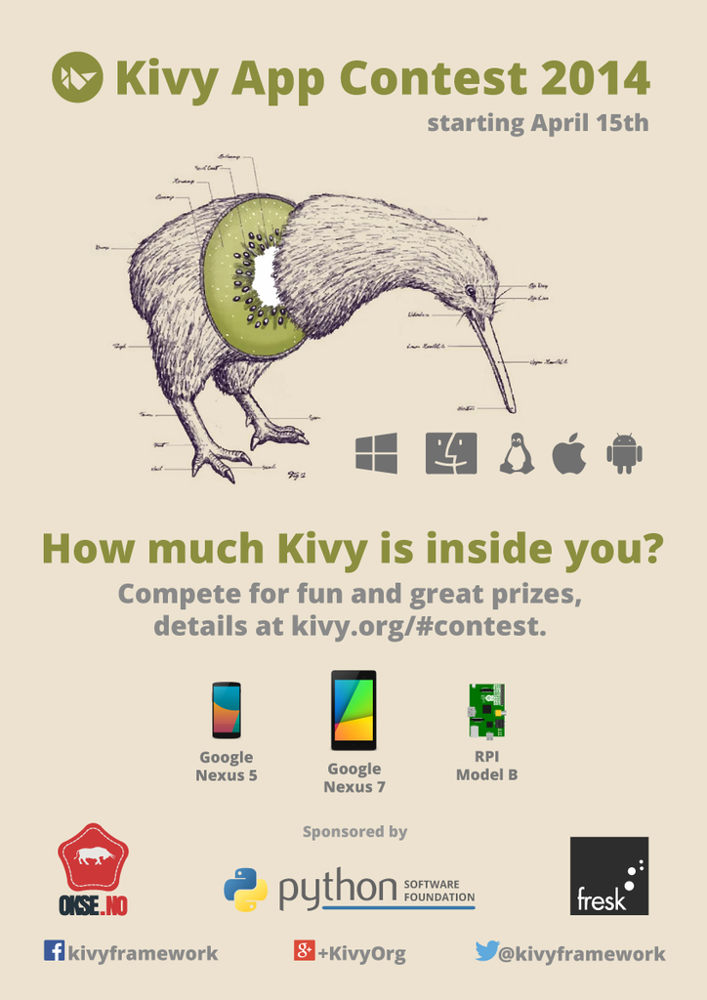

Kivy Programming Contest 2014
Kivy is organizing its second application development contest!. This is a great
chance for users both new and experienced to show off their skills and compete
for prizes. Entries will be judged on a range of criteria accessible
to both new and experienced programmers, so don't be afraid
to dive in!
Theme: will be revealed at the contest start date
Call for Sponsors
We're currently looking for more sponsors to help make this contest
even bigger and better! Sponsorship is possible at a range of tiers
with different levels of interaction and benefits to your organization.
Interested parties are invited
to contact us for more
information.
Guidelines
These are general guideline, exact rules and terms will be posted before the
contest starts.
The goal is to show the world some of the great things that be built
quickly with Kivy while having fun, and to give more people an
opportunity to try Kivy's cool features. The general guidelines are:
- Keep it family friendly.
- Make it fun and attractive, show how your Kivy app can stand out from the crowd.
- Entries can be from individuals or from teams.
- No prior code - build your full app during the competition month. You are allowed to re-use existing known open source libraries in conjunction with kivy
- Don't forget the theme (To be revealed)!
Timeline
|
March 15th, 2014
|
Kivy Programming Contest announced, and call for sponsors.
|
|---|
|
April 2nd, 2014
| Start accepting entries from individuals or teams, but
please don't start your coding until the official start date.
|
|---|
|
April 15th, 2014
|
Start of Contest, final rules published.
|
|---|
|
May 14th, 2014, 23:59 GMT
|
End of contest, final app deadline!
|
|---|
|
May 20th, 2014
|
Winners announced!
|
|---|
Sponsors
Top tier Sponsors

Python Software Foundation
The Python Software
Foundation is the non-profit that holds and protects the
intellectual property rights behind Python. Its mission is to
promote, protect, and advance the Python programming language, and
to support and facilitate the growth of a diverse and
international community of Python programmers.
To Become a Sponsor contact us at contest@kivy.org